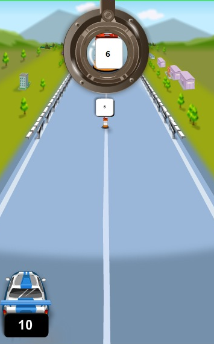

<?xml version="1.0" encoding="UTF-8"?><div>

  

  


  <div id="instructions">
 <p>Steer around the signs and get to the finish line fast to win a medal!</p>
     <p> <center></center> </p>
    <p> Your number is below your car.</p>
<!--     <p> </p> -->
     <p>Use the left and right arrow keys to change lanes.  
     Choose the lane where any signs to your right have numbers greater than yours
    and any signs to your left have numbers less than yours. 
    Remember: if your number is less, move to the left. </p>
<!--    <p>  </p> -->
    <p>The spyglass will give you a close-up view of the sign coming down the 
    road when it's too far away to read.</p>
     <p> <center></center></p>
        <p>Speed up and down using the up and down arrow keys. The medal pace meter will
        tell you if you're going fast enough to win a bronze, silver, or gold medal.</p>
    <p> <center></center> </p>
    <p> Hit the spacebar for a turboboost of speed that will take you to the next question. But be careful! You 
    can only use turboboost once per question and once you do, you can't change lanes
    until you pass a sign.</p>
    <p>When you pass under a banner, your car's number will change.</p>
    <p>In this race, your final score is the time you took plus penalty time 
    for any mistakes you made, so lower scores are better. </p>
    <p> <center></center> </p>
    <p> <center></center> </p>
    <p> You can hit the "Esc" key at any time to quit the game. Good luck! </p>
    
  </div>

</div>